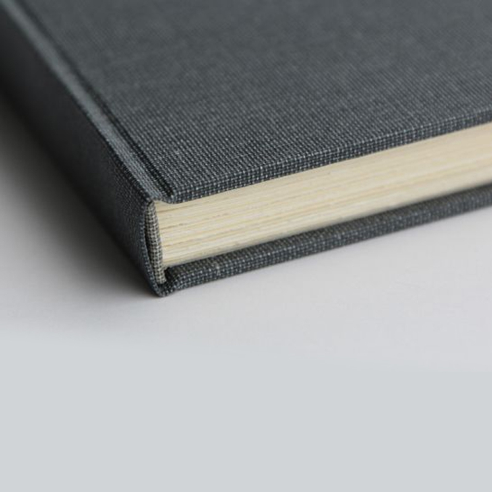

1 Bases de données
1.1 Vocabulaire
| Français | English |
|---|---|
| le confinement | the lockdown |
| un ordinateur portable | a laptop |
| 14 sur 20 | 14 out of 20 |
| s’attendre à qqch | to expect stg |
| des résultats mitigés | mixed results |
| l’opinion majoritaire | the majority opinion |
| tranché, clair | clear-cut |
| appartenir à | to belong to |
| la plupart | most |
| un tiers | a third |
| une échelle | a scale |
| un stage | an internship |
| évaluer | to rate |
| un veau | a calf |
| un mollet | a calf |
| augmenter | to increase |
| à l’étranger | abroad |
| la renommée | standing |
| épouvantable | horrendous |
| une tension | a strain |
| libérer | to unleash |
| au cours de | throughout |
| s’appliquer à | to apply to |
| éviter | to avoid |
| de l’agitation politique | unrest |
| réussir à, parvenir à | to manage to |
| la croissance | growth |
| la famine | starvation |
| un moyen | a means |
| une percée | a breakthrough |
| assister à | to attend |
| accomplir | to achieve |
| antérieur, précédent | previous |
| défendable | arguable |
| stupéfiant, incroyable | staggering |
| un bond | a leap |
| la foi | faith |
| une récolte | a harvest |
| se produire | to occur |
| (s’) accélerer | to quicken |
| à partir de X | from X onwards |
| un réseau | a network |
| sous-tendre | to underpin |
| une décennie | a decade |
| considérable | tremendous |
| croissance, progrès | upswing |
| aller de pair | to go hand in hand |
| un équipement | an apparatus |
| être dérouté | to be at a loss |
| provenir de | to stem from |
| se produire, se passer | to occur |
| approfondi, minutieux | thorough |
| une forme | a shape |
| un métier, un artisanat | a craft |
| dans l’ensemble | on the whole |
| réticent à | reluctant to |
| ainsi | thus |
| un test décisif | a litmus test |
| procurer qqch à qqn | to provide sb with stg |
| de très mauvaise qualité | shoddy |
| en raison de | due to |
| se transformer en, devenir | to turn into |
| la fortune | wealth |
| par conséquent | therefore |
| dans le sillage de | in the wake of |
| faire des progrès | to make headway |
| visible | conspicuous |
| relier un livre | to bind |
| posséder | to own |
| à travers, au cours | throughout |
| immédiatement | straight away |
| concevoir à l’avance | to think through |
| inclure, comporter, présenter | to feature |
| une majuscule | a capital |
| une preuve | a proof |
| artisanat, savoir-faire | craftsmanship |
| tisser | to weave |
| prouver, démontrer | to speak to |
| le dos d’un livre | the spine |
| commander (une oeuvre d’art) | to commission |
| le cuir | leather |
| un atelier de reliure | a bindery |
| un bord | an edge |
| doré | gilded |
| rugueux | rough |
| produire, sortir | to issue |
| provisoire | provisional |
| assister à qqch | to attend stg |
| une conférence | a lecture |
| un défaut | a shortcoming |
| une incarnation | an embodiment |
| exposer | to set forth |
| enraciner | to root |
| mettre en valeur | to emphasize |
| la maquette, la disposition | the layout |
| une tache, un défaut | a blemish |
| fabriquer | to manufacture |
| uniquement | solely |
| donner le feu vert | to greenlight |
| en dépit de | in spite of |
| bien que | although |
| un discours | an utterance |
| une déception | a disappointment |
| parmi | among(st) |
| pourtant | yet |
| car | for |
| à moins que | unless |
| une marque, un signe | a token |
| travailler dur | to toil |
| un fardeau | a burden |
| sanctifier | to hallow |
| un but | an aim |
| un grand pas | a stride |
| un zélote | a votary |
| adorer | to worship |
| un coffret | a casket |
| au milieu de | amid(st) |
| un repos | a rest |
| s’efforcer | to strive |
| capter | to engross |
| la perspicacité | insight |
| ignorer | to disreguard |
| manquer | to lack |
| s’étonner | to wonder |
| inonder | to flood |
| des élucubrations | twaddle |
| envers | towards |
| cesser | to cease |
| authentique | genuine |
| une campagne de publicité | an advertising campaign |
| méditer | to ponder |
| les fournitures de bureau | stationery |
| une annonce | an annoucement |
| dispenser qn de | to save sb -ING |
| pensif | thoughtful |
| compatir | to sympathise |
| le nom de famille | the surname |
| enterrer | to bury |
| raffiné | exquisite |
| présenter, comporter | to feature |
| demeurer | to remain |
| au lieu de | instead of |
| aisé | wealthy |
| un foyer | a household |
| un surnom | a nickname |
| façonner | to craft |
| un journal intime | a diary |
| avoir honte de | to be ashamed of |
| de l’adresse | deftness |
| un point (couture) | a stitch |
| du tissu | fabric |
| une aquarelle | a watercolour |
| détester | to loathe |
| élever qqch | to raise |
| avertir de | to warn aganist |
| diffamatoire | libellous |
| entreprendre | to undertake |
| dissimuler | to conceal |
| hors d’atteinte | out of reach |
| récupérer | to retrieve |
| estimer | to reckon |
| minutieux | painstaking |
| éviter, fuir | to shun |
| remarquer | to notice |
| ancien, ex | former |
| un propriétaire | an owner |
| abandonner | to give up |
| viser à | to aim |
| procurer | to provide |
| un salaire | a wage |
| se classer | to rank |
| parmi | among |
| une implication, un engagement | an involvement |
| un conservateur de musée | a curator |
| réduire les dépenses | to cut expenses |
| un logiciel | a software |
| un détaillant | a retailer |
| la conscience | the awareness |
| contrecarrer | to thwart |
| une action | a deed |
| léguer | to bequeath |
| digne | worthy |
| gagner de l’argent en travaillant | to earn |
| s’enrôler | to enlist |
| fort probable | likely |
| le ravitaillement | the supply |
| pendant que | while |
| fournir | to provide |
| déménager | to move |
| décerner | to award |
| biaisé, partial | biassed |
| étendre, étirer | to stretch |
| dentelle | lace |
| résoudre | to work out |
| rendre, donner | to hand out |
| une enchère, une offre d’achat | a bid |
| “tenir debout“, “se tenir“ | to have legs |
| promouvoir (p…) | to promote |
| une mission, une tâche | an assignment |
| dépeindre | to depict |
| sauvage | wild |
| en apparence | seemingly |
| un actif, un atout | an asset |
| au premier plan | in the foreground |
| rester, demeurer | to remain |
| du mobilier, des meubles | furniture |
| une réunion | a meeting |
| emprunter à | to borrow from |
| se moquer de | to poke fun at |
| une échelle (de grandeur) | a scale |
| champ, portée, marge de manœuvre | scope |
| bien aimer qqch | to be fond of stg |
| agencement, disposition, maquette | a layout |
| un but, un objectif (p…) | a purpose |
| un scrupule | a qualm |
| qui s’ensuit, final | eventual |
| un équipage | a crew |
| probable, susceptible | likely |
| s’excuser de qqch | to apologize |
| agile | nimble |
| avertir | to warn |
| diriger qqch | to head stg |
| rendement, productivité | output |
| manipuler qqch | to handle stg |
| confier qqch à qn | to entrust sb with stg |
| une esquisse | a sketch |
| continuer, poursuivre | to carry on |
| vivant, plein d’entrain | lively |
| reconnaître, admettre | to acknowledge |
| un moyens de | a means to |
| planifier | to schedule |
| vendre la mèche | to spill the beans |
| un dollar (fam.) | a buck |
| il semble que | it looks as if |
| dépenser | to spend |
| une tempête | a storm |
| superficiel, peu profond | shallow |
| du jour au lendemain | overnight |
| un modèle | a template |
| un but (p…) | a purpose |
| une enchère | an auction |
| faire 1m. de large | to be 1m. wide |
| fournir (p…) | to provide sb with |
| essayer de | to attempt to |
| plier | to fold |
| bien que | although |
| un discours | an utterance |
| en dépit de | in spite of |
| une déception | a disappointment |
| parmi | among(st) |
| pourtant | yet |
| car | for |
| à moins que | unless |
| une marque, un signe | a token |
| travailler dur | to toil |
| par conséquent | therefore |
| un fardeau | a burden |
| sanctifier | to hallow |
| un but | an aim |
| un grand pas | a stride |
| un zélote | a votary |
| adorer | to worship |
| un coffret | a casket |
| au milieu de | amid(st) |
| un repos | a rest |
| s’efforcer | to strive |
| capter | to engross |
| la perspicacité | insight |
| ignorer | to disreguard |
| manquer | to lack |
| s’étonner | to wonder |
| inonder | to flood |
| des élucubrations | twaddle |
| envers | towards |
| cesser | to cease |
| raffiné | exquisite |
| présenter, comporter | to feature |
| demeurer | to remain |
| au lieu de | instead of |
| bien que | although |
| aisé | wealthy |
| un foyer | a household |
| un surnom | a nickname |
| façonner | to craft |
| un journal intime | a diary |
| avoir honte de | to be ashamed of |
| de l’adresse | deftness |
| un point (couture) | a stitch |
| du tissu | fabric |
| une aquarelle | a watercolour |
| détester | to loathe |
| élever qqch | to raise |
| avertir de | to warn aganist |
| diffamatoire | libellous |
| accomplir | to achieve |
| entreprendre | to undertake |
| dissimuler | to conceal |
| hors d’atteinte | out of reach |
| récupérer | to retrieve |
| détester | to loathe |
| façonner | to craft |
| estimer | to reckon |
| une forme | a shape |
| minutieux | painstaking |
| éviter, fuir | to shun |
| remarquer | to notice |
| ancien, ex | former |
| un propriétaire | an owner |
| abandonner | to give up |
| viser à | to aim |
| procurer | to provide |
| un salaire | a wage |
| se classer | to rank |
| parmi | among |
| une implication, un engagement | an involvement |
| un conservateur de musée | a curator |
| réduire les dépenses | to cut expenses |
| un logiciel | a software |
| un détaillant | a retailer |
| la conscience | the awareness |
| contrecarrer | to thwart |
| une action | a deed |
| léguer | to bequeath |
| digne | worthy |
| gagner de l’argent en travaillant | to earn |
| s’agenouiller | to kneel |
| une rayure | a stripe |
| occidental | Western |
| côte-à-côte | side-by-side |
| exposer (e…) | to exhibit |
| exposer (d…) | to display |
| un point d’orgue | a highlight |
| un faux | a fake |
| remettre en cause | to call into question |
| un spécialiste | a scholar |
| commander une œuvre d’art | to commission |
| rendre possible | to enable |
| un trait de pinceau | a brush stroke |
| rendre une décision | to rule |
| superviser | to oversee |
| un petit morceau | a patch |
| duper, abuser | to fool |
| une veuve | a widow |
| à la fin, finalement | eventually |
| une arnaque | a scam |
| servir une peine de prison | to do the time |
| médicolégal | forensic |
| un marchand d’art | an art dealer |
| tristement célèbre | infamous |
| une vente aux enchères | an auction |
| reconnu coupable | convicted |
| récolter (un profit) | to net |
| acheter | to purchase |
| reconnaître | to acknowledge |
| courageux, hardi | bold |
| un artisan | a craftsman |
| un témoin | a witness |
| exact | accurate |
| un orteil | a toe |
| un casque | a helmet |
| regarder fixement | to stare |
| mériter | to deserve |
| contrefaire, falsifier | to forge |
| inoffensif | innocuous |
| un mélange | a blend |
| divertir, distraire | to entertain |
| intéressé, cupide | money-grubbing |
| riche, aisé | wealthy |
| une série | a series |
| dévoiler, révéler | to expose |
| inattendu | unexpected |
| gagner de l’argent | to earn money |
1.2 Définitions
| Expression | Definition |
|---|---|
| BACK | the side of the signatures along which the leaves are folded. A synonym for spine |
| BACKING | a light-weight strip of cardboard that is placed between the spine and the covering to stiffen the latter |
| BACKLINING | a stiff strip that acts as the base for making the spine. It is made of the same material as the cover |
| BANDS | the sewing supports (cords) when they are not sunk, but are outside the spine |
| BOARDS | the cover boards when they are made of wood |
| BOOKMARK | a ribbon or cord inserted between the pages and attached to the upper-inside part of the spine |
| COLOPHON | also called publisher’s postcript, it is, in a printed book the final annotation which gives the printer’s name, location, and date of publication |
| COVERING | the material which covers the cover structure. Also the operation of applying it |
| COVER | the structure or material that covers the book block |
| CREASING | the groove, which in bookbinding is made with a particular machine or manually with a bone folder, that folds paper and cardboard without damaging them |
| EDGE | the three-side surfaces along which the book opens. Corresponds to the outer borders of the sheets |
| COVER BOARDS | the two side parts of the cover that cover the surfaces of the book. Also the cardboard pieces before they are covered |
| FLAPS | the cover board turn-ins of typographic covers |
| CASING | the operation in which the book block is inserted and joined to the cover by pasting the flyleaves |
| FLYLEAVES | situated at the beginning and the end of a book. The leaves are folded in two parts, one of which is pasted to the inside of the cover while the other forms the first and last pages of the book |
| FORE-EDGE | in books with rounded spines, this is the rounded recess along the whole edge of the book |
| GAP | a small space left between the shoulder and the tip of the cover boards so that they can open more easily |
| GROOVE | the groove between the spine and the board covers |
| HEAD | the upper part of the book |
| ROUNDING | the operation involved in making the spine rounded |
| SEWING | the operation that enables the signatures to be kept together. It can be done in link-stitch, half-stitch, or full-stitch |
| SHOULDER | obtained by rounding. It is the same thickness as the cover boards |
| HEADBAND | the silk band that encircles the spine and protrudes at the head and tail |
| SIGNATURE or SECTION | two or more sheets folded in half and inserted into each other. The result of folding the printed or blank sheets |
| SPINE | the side of the book in which the signatures are sewed together |
| TAIL | lower part of the book |
| TAPPING (ALIGNING) | a recurring operation that is necessary for keeping the edges of the sheets and the backs of the signatures aligned |
| TITLE PAGE | the page that proceeds the text and bears the title and author’s name |
| TRIMMING | carried out on individual signatures to even them out and make them the same size |
| WASTE PAPER | a technical term to define all the paper (newspaper and wrapping paper) that are used as a support while working |
1.3 Traductions
| Français | English |
|---|---|
| Avec qui habites-tu ? | Who do you live with? |
| Combien de temps cela te prend-il pour aller à l’École Estienne ? | How long does it take you to go to École Estienne? |
| Où habitais-tu l’année dernière ? | Where did you live last year? |
| Es-tu déjà allé(e) au Musée de la Bourse de Commerce qui a ouvert l’année dernière ? | Have you already been to the MBC which opened last year? |
| Regarde ! Ils installent de nouveaux ordinateurs ! | Look! New computers are being installed. |
| On m’a dit qu’ils ne fonctionnaient pas très bien… | I was told they didn’t work properly… |
| Ils sont en train d’examiner le problème. | The issue is being looked into. |
| On dit de ces ordinateurs qu’ils ont coûté très cher. | These computers are said to have cost a lot. |
| On m’a dit que William Morris avait aussi écrit des poèmes | I was told William Morris had also written poems. |
| S’il ne faisait pas aussi chaud, je ne serais pas aussi fatigué(e) | It it weren’t that hot, I wouldn’t be that tired. |
| Tu n’aurais pas dû lui parler | You shouldn’t have spoken to her. |
| Si j’avais su, je n’aurais pas écrit ce courriel. | If I had known, I wouldn’t have written that email. |
| Tu n’aurais pas dû donner le feu vert à cette maquette. | You should not have given the green light to this layout. |
| Ces livres ont été publiés en dépit de leurs défauts. | These books were published in spite of their shortcomings. |
| As-tu assisté à la vidéo-conférence hier soir? | Did you attend yesterday’s video meeting? |
| Morris n’achetait que des produits fabriqués par les meilleurs artisans. | Morris only boughts products manufactured by the best craftsmen. |
| À moins que tu ne sois pas d’accord, je pense que nous devrions choisir cette option. | Unless you disagree, I think we should choose this option. |
| Nous nous efforçons de répondre au mieux aux exigences des clients . | We strive to meet our customers’ requirements as well as we can. |
| J’ai dû assister à la réunion en dépit d’un emploi du temps très serré. | I had to attend the meeting in spite of a very tight schedule. |
| Il a dû oublier de leur envoyer la nouvelle maquette. | He must have forgotten to send them the new layout. |
| Les peintres pré-raphaelites ont dû avoir beaucoup d’influence. | The Pre-Raphaelites must have had a lot of influence. |
| Il se pourrait que cette œuvre ait été découverte par hasard. | This work might have been discovered by chance. |
| Voilà des mois que je me pose aussi cette question ! | I’ve been wondering for months about that too! |
| Le projet sur lequel je travaille depuis vendredi m’ennuie un peu. | The project I’ve been working on since Friday bores me. |
| Ces ouvrages ont été imprimés et reliés au début du vingtième siècle. | These books were bound and printed at the beginning of the twentieth century. |
| On étudie encore l’impact de May Morris sur les Beaux Arts. | May Morris’s impact on Fine Arts is still being studied. |
| On devrait davantage écouter les experts. | Insiders should be listened to more. |
| Les gens croient toujours que les motifs de May Morris ont été créés par son père. | May Morris’s patterns are always believed to have been created by her father. |
| On pense que William Morris a été inspiré par une conférence sur la typographie. | William Morris is thought to have been inspired by a lecture on typography. |
1.4 Prononciation
| Words |
|---|
| abroad |
| pressure |
| occur |
| unique |
| achieve |
| empire |
| era |
| scientific |
| breakthrough |
| ancient |
| throughout |
| associate |
| linen |
| leather |
| gilded |
| rough |
| lecture |
| feature |
| issue |
| cathedral |
| bindery |
| blemish |
| pattern |
| emphasize |
| sequel |
| manufacture |
| thorough |
| shoddy |
| therefore |
| avoid |
| conspicuous |
| pleasure |
| mediocre |
| novel |
| signature |
| labour |
| although |
| worthless |
| knowledge |
| burden |
| society |
| ethical |
| contemporary |
| singer |
| medium |
| genuine |
| advertise |
| bury |
| series |
| stationery |
| study |
| thoughtful |
| initial |
| chore |
| instead |
| wealthy |
| journey |
| diary |
| loathe |
| libellous |
| hurl |
| notice |
| awareness |
| software |
| worthy |
| earn |
| agreement |
| bequeath |
| thwart |
| obituary |
| revival |
| flourish |
| intricate |
| lively |
| author |
| entire |
| allow |
| riot |
| placard |
| purpose |
| casualty |
| digital |
| purchase |
| acknowledge |
| toe |
| accurate |
| raise |
| likely |
| museum |
| truth |
| innocuous |
| bold |
| forge |
| laboratory |
| career |
| figure |
| almost |
| portrait |
| through |
| highlight |
| commission |
| enable |
| stroke |
| fake |
| curator |
| argue |
| mayor |
| research |
| widow |
| eventually |
| infamous |
| vintage |
| auction |
| forensic |
1.5 Échéances
| 17/09/2021 | Préparer le rapport oral du sondage de début d’année, pour les équipes qui ne sont pas passées. |
| 03/12/2021 | Test 2h : Compréhension écrite / Vocabulaire / Traduction / Expression écrite (un paragraphe structuré de 300 mots) |
1.6 Flashcards
| Images | Expressions |
|---|---|

|
01 articlepix |

|
01 pixbeltra |

|
02 matisse |

|
a board with a groove |

|
a book clasp |
| a bride | |
| a British flag | |
|  | a cloth cover |

|
a curator |
| a cushion | |
| a diver | |
| a drawing board | |

|
a fly leaf |

|
a frame |

|
a grip |

|
a harvest |
| a housemaid | |
| a leaf | |

|
a leap |
| a leash | |
| a linen handkerchief | |

|
a London underground station |
| a magazine spread | |

|
a man in plus fours |

|
a marbled fore edge |
| a millinery | |

|
a pattern |
| a placard | |
| a puddle jumper | |
| a sliding lid | |

|
a steam driven cylinder press |
| a steamship | |
| a stem | |

|
a stool |

|
a tape handle |
| a typeface | |

|
a Victorian three decker |
| a wake | |

|
a watercolour |

|
a woodcut capital |

|
a wooden printing press |

|
baby toes |

|
backing a book |
| bird seed | |
| bleach | |
| book binding | |

|
book spines |

|
books with bookmarks |

|
books with flaps |
| brush strokes | |
| cloth | |
| creasing with bone folders | |
| different typefaces | |
| dusk | |
| egg tempera paint | |
| embroidery | |
| endpaper | |
| gilded edges | |
| glasscases of rare books | |
| increasingly | |
| letterA with flourishes | |
| letterpress printing | |
| monotype printing | |

|
moodle |
| paper watermark | |

|
potato blight |
| retrieving | |

|
stationery |

|
the backlining of a book |
| the bands of a book | |

|
the countryside |
| the Distinguished Flying Cross | |

|
the golden type by Morris |

|
the two cover boards |

|
to be dazzled |

|
to burst |
| to darn | |

|
to display works of art |
| to engrave | |
| to hurl a ball | |

|
to mug someone |
| to stagger | |
| to thread a needle | |
| to witness a robbery | |

|
trousers |
| two handles | |
| two people falling out | |

|
vine leaf decoration |

|
watercolour |
| watermark | |

|
wood pulp |